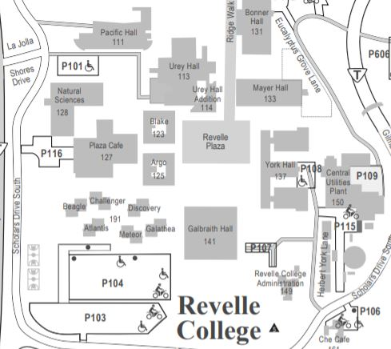
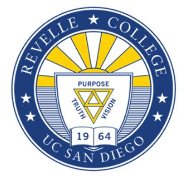

Revelle
Purpose, Truth, Vision
Revelle College offers students the opportunity to achieve an essential
background in all major areas of learning as well as obtain essential tools to effectively
and creatively pursue further study and adapt to a rapidly changing world.
Enrollment(2020): 5,437 - 17.1% of total enrollment

There are a total of 6 general education requirements for Revelle College: Humanities,
Mathematics, Natural Science, Social Science, Fine Arts, and Language.
Humanities Requirement
An Introduction to major aspects in the development of Western humanistic tradition.
You will learn to interpret important literary, historical, and philosophical principles through lectures,
discussions and the writing of essays.
A five-course sequence in humanities: Humanities 1,2,3,4,5
Mathematics Requirement
- Humanities 1: The Foundations of Western Civilization: Israel and Greece (6 units)
- Humanities 2: Rome, Christianity, and the Middle Ages (6 units)
- Humanities 3: Renaissance, Reformation, and Early Modern Europe (4 units)
- Humanities 4: Enlightenment, Romanticism, Revolution (1660-1848) (4 units)
- Humanities 5: Modern Culture (1848 - present) (4 units)
Must take 3 courses in mathematics, two courses in calculus and one additional
cour chosen from the approved list below.
Calculus Courses
Natural Science Requirement
- MATH 10A or 20A
- MATH 10B or 20B
- MATH 10C
- MATH 20C
- MATH 11
- MATH 18
- PHIL 10
A total of 5 courses which include:
Social Science Requirement
- Biology - 1 course
- Chemistry - 1 course
- Physics - 1 course
- Natural Science - 2 courses (from approved list )
A total of 2 courses (4 units each)
Keep in mind that AP Credits can exempt social science requirements. Please visit here to learn more.
Fine Arts Requirement
- Select from approved social science departments
Keep in mind that AP Credits can exempt social science requirements. Please visit here to learn more.
One course selected from:
Language Requirement
- Departments of Music
- Theater and Dance
- Visual Arts
Basic conversational and reading proficiency in a modern foreign language, or
advanced reading proficiency in a classical language.
May be satisfied with:
- Passing a UC San Diego language proficiency exam
- Completion of a fourth quarter college language course
- Completion of a UCSD Heritage Language course for bilingual speakers
- Appropriate AP or IB score
- Score of 700 or higher on the SATII Language Exam
- A native speaker of a language other than English and having attended at least one year of high school taught in that language.
